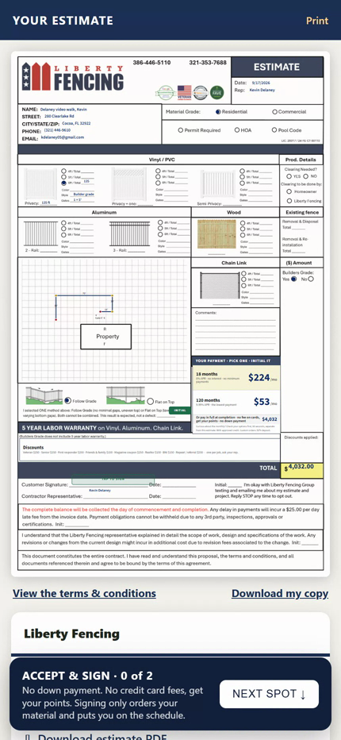
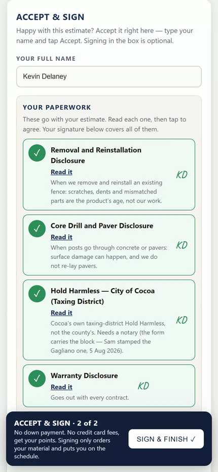
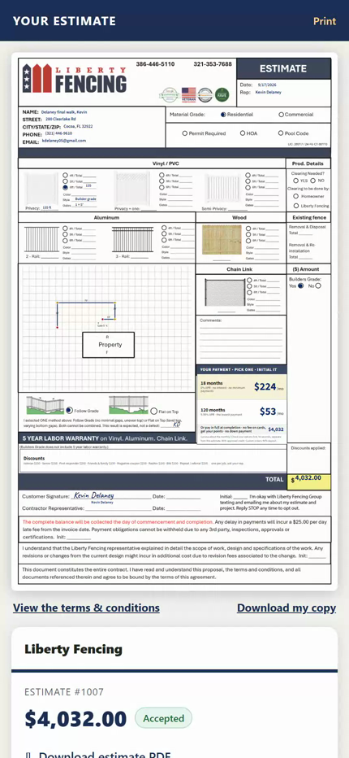
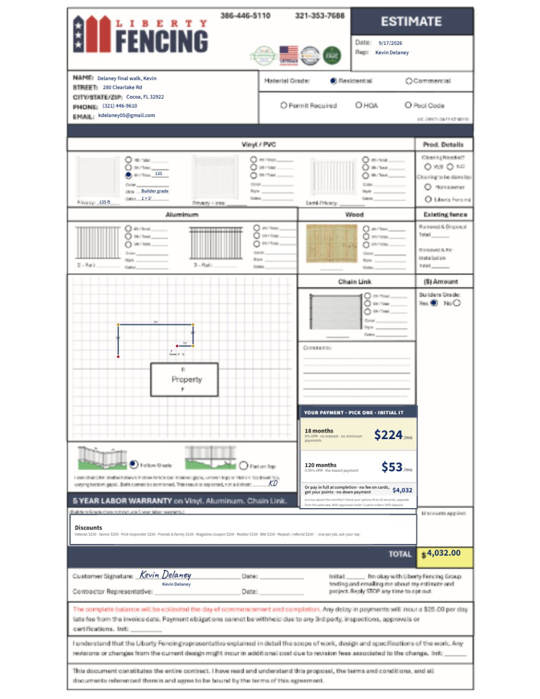
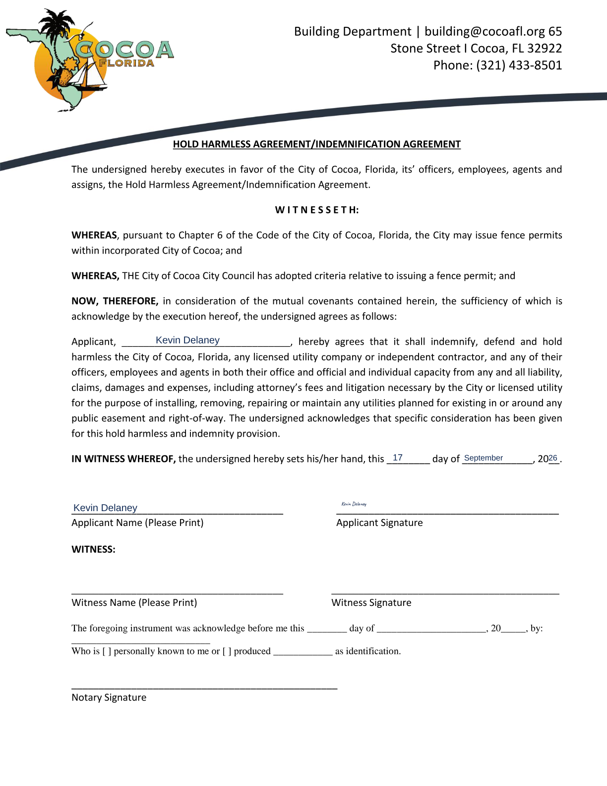
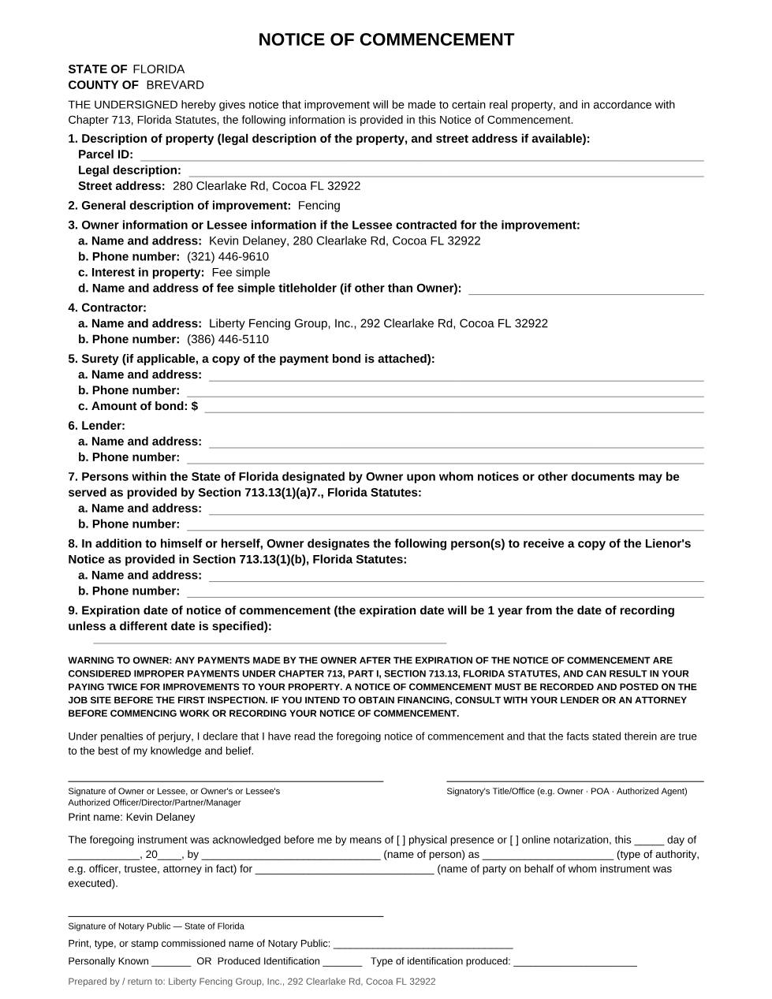
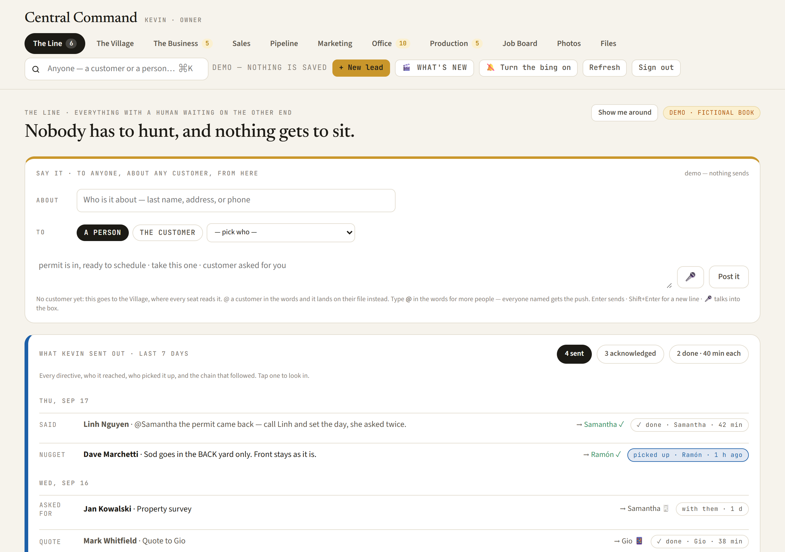

Was, and is. The new way, department by department.
We changed how a job gets signed and started. This page says what you used to do, what you do now, and what you can stop doing. Nobody's job went away. The redundant parts did.
The file tells you the one thing to do next, in order. Nothing goes to a customer unless Kevin has turned that switch on. If you press the wrong thing, the system refuses it and says why. If you are not sure, do nothing: whatever is yours will come to you, with the paperwork attached. There is nothing to prepare for. Every change from here on arrives the way this one did, as a note with pictures, and it is already working the day you read it.
The whole thing the customer does. 22 seconds.

Their contract, typed in
Every form, one tap each
You're inOne link on their phone. They type their name, tap the spots, tap the forms, accept. Every county form is already filled in from the file. That acceptance is the contract, and they are locked in.
Everyone texting from the app · the pre-written texts land in the reply box
- On a customer's file, tapping a pre-written text (Show up, Thank you, Until yes, the estimate link, a folder piece) buzzed and showed nothing. The sheet with the words was built, but the phone would not put it on top of the open file. Some of you saw it pop up later, when you backed out of the file.
- Typing your own text in the reply box under the thread worked the whole time.
- Tap a pre-written text and the words land in the reply box under the customer's thread, with their name and yours. The file scrolls to the thread so you see them.
- Read it. Change a word if you want. Tap SEND. It goes from your line into the thread; undo for 15 seconds on the bar. The touch counts on SEND, not on the tap.
- ALL THE LINES and EMAIL INSTEAD open the list right over the file now. Pick a text and it lands in the same reply box. Pick an email and it opens with the words; SEND goes from your mailbox.
- The full-screen text view is the same as yesterday: the words show under the thread with one SEND.
Sales · calls from your iPhone
- Call in the app copied the number and sent you into ConnectUC to dial. A customer calling your number rang ConnectUC, and this week ConnectUC kept going to sleep: calls went straight to voicemail without ringing, or rang out silent.
- Call in the app dials from your iPhone. Same button, one tap, the phone's own dialer. When you come back to the app it asks one question: Voicemail or Talked to them. That answer is the record on the customer's file.
- A customer calling your number now rings your iPhone when ConnectUC is asleep (Uvoice forwards it). Answer it like any call.
- Called someone outside the app? Tap Log a call on their card: which way it was, then the same question.
- Texting does not move. Text in the app goes out from your business line, as it has all week.
The office · Who's free
- You picked a rep from a list and hoped. Once you had picked a rep and a day, the form showed what the machine had booked for them that day — not what Contractors Cloud had, not what was on their Google Calendar.
- Territories lived in your head.
- Pick the day and the time. A strip under them says who covers that county, who is free at that hour, what the busy ones are doing, and how many visits each already has that day — green is free, red says what is in the way ("1:00–2:00 PM · Sales Appointment - Abney"), grey means their calendar has not been read yet.
- It reads every rep's real Google Calendar, five minutes old at most, and Contractors Cloud's visits and ours. The same visit is never counted twice.
- Tap a name and it becomes the rep on the form. Reps outside the area sit in a second row, still one tap away.
Everyone · The Jetstream, in its new home
- A Jetstream in Contractors Cloud: Add Jetstream, type part of a name, Enter, and an email to five people per job.
- In the new file, the To box found a person but @ in the words found nobody; you scrolled a list and clicked.
- To answer somebody's note you "went into the corner" and typed their name again.
- The reps got it by email and answered by text or by phone, off the file.
- Open the customer, Open the full file. Left is the customer. Right is the team: that is the Jetstream.
- Type @ and two letters in the blue box; the people come up. Enter picks, Enter posts. As many people as you like. Or one name in To.
- Everyone named gets it: a buzz on the phone with the link (a rep or a supervisor with the app), an email with the link (Jess, Sam, Laura). It waits on The Line until they open the file. Nobody else hears about it.
- The note lands in the thread marked inside note · never sent to the customer, the receipt under it. ↩ Reply on it fills To with who wrote it; the answer sits on the same customer.
- On the phone it is the same thread: TELL THE TEAM under the texts; a tag buzzes the rep and the tap opens that file.
The office · you asked this morning, here it is
- One name box, "Last, First" — you copied the last name to the front while the caller was still talking.
- The phone, the email and the address were buttons and cards, not words you could read and copy at a glance.
- One file at a time; a second call landed on top of the first.
- Tagging a person meant scrolling a list; a note you posted showed on the left and looked like it went to the customer.
- A supplier invoice landed somewhere and nobody said where.
- 811 told you a locate was expiring only if you went and looked.
- First name · Last name, two boxes. The file still reads Last, First on its own.
- 📞 the number · ✉ the email · 🏠 the address, right under the name: tap to call, tap to map, one word to copy. The address list never puts a county in the city box.
- ↗ new tab opens the same file in its own browser tab — as many as you like.
- Type Eric in the To box and it is Eric; @office, @sales, @rep (the rep on this file) still work. Your note shows on the left marked inside note · never sent to the customer.
- The Bills tile in the Office room counts what landed; the customer's file has the card with Approve on it.
- Office room: 811 locates expiring · the job has not started, soonest first. Nothing reorders itself; you decide.
- Find: an address with a house number ("3117 Constellation Dr") is searched as an address. Before 10:55 AM the four digits made it a phone search and the wrong people came up (v121).
- Find: the best match is first ("Brian Mo" puts Morgan, Brian at the top), newest first only among equals. Before 11:35 AM it was newest first, so a July file sat under every newer Brian (v122).
- Open on every document: each row under On the file and each settled row on the Paperwork card opens the file in a new tab. Before 12:55 PM it said "on file" with nowhere to open it (v126).
- Hand to… on every open ask, on the file and in the Office room: pick the seat, one word for them, they get a push and their name goes on the row. The clock keeps running; anyone in the office can still press Done. New asks still land on the brand's office seat (Sam for fencing, Pro-Tech and roofing; Jess for Oasis) until Kevin or Jess changes the seat rows (v126 · 407).
- Open really opens (v127, 1:00 PM): a document opens through a short-lived signed link, on the cards and on the grey line in the thread. Between 12:55 and 1:00 the Open button led to a page that said not found.
- Fewer paperwork rows by default: HOA approval no longer opens on any new job, and Property survey no longer opens on a roofing job. When a job does have an HOA, + Ask → HOA approval. A row that does not apply: Done → "Not required, because…" one word → Done.
- Enter is a new line (v130, 1:20 PM) in the note box, the Village, Say it and the text box. The button sends, and Ctrl+Enter sends. Before 1:20 PM Enter sent, and half-typed notes went out.
- "Not required" works without a file (v130). Until 1:20 PM the Done box refused to close unless a file was chosen, so the words alone never got through. A row taken off the list now reads "off the list · why", not "on file".
- A page left open tells you when it is old (v131, 1:25 PM): a gold chip, "Newer version ready · Refresh", appears at the top within three minutes of a change. Tap it. Until now an old tab just lacked the newest buttons, and you found out by asking.
- Employees first in the @ list (v132, 1:45 PM): type @ and a name; every employee who matches is on top, tinted blue, with their title (Ops manager, Supervisor, Office, Sales rep); customers come after with a CUSTOMER tag and their street. Three Luis Gonzalezes are no longer a guess.
- "Enter sends" is your choice (v132): a small switch at the top, next to Refresh. Off, Enter is a new line and the button sends. On, Enter sends and Shift+Enter is a new line. It remembers your choice on your browser.
- The bell rings in The Village (v133, 2:00 PM): when a rep hangs one, the gold bell row shows up in The Village for everyone. Tap 🔥 Way to go, or 💬 Reply and say it. Either one lands on the reps' own thread, on their phones, under that bell. You see their bells; you do not see the rest of their thread.
Jermey · Pro-Tech is on: your line
- Your seat had no texting line. A text from the app left as Liberty Fencing’s 386 number (three did, on 16 Sep).
- Extension 157 was not on your seat: calls and texts on 321-783-1688 credited nobody and never buzzed you. Three calls rang out this week.
- The Pro-Tech line, 321-352-6955, sat off in both line tables, waiting on Kevin’s word.
- Kevin said it, 8:10 AM: "Turn Protech on. And set Jermey up." Your Text box says FROM YOUR LINE with 321-352-6955 under it; every text from the app leaves from the Pro-Tech number into the customer’s thread.
- Your calling number is still 321-783-1688 (ext 157). Calls and texts on it land on the customer’s file under your name, and a text buzzes your phone.
- Call from the app hands you into ConnectUC, so the call is on the Pro-Tech line and on the file, not on your Verizon cell.
- The office keeps 321-783-1694 exactly as it was.
Everyone · The Library
- The films came one at a time, as links in a text or an email, and the old commercials sat next to them.
- To find how something worked you scrolled the Ride-Alongs page, or asked Kevin.
- One door: The Library. The last two weeks on the front page, a search that reads every word said in every film, and HOW DO I… questions one tap each.
- Two tabs, The phone app and Central Command, and a chip per team. It always opens on everything unless the link says otherwise.
- Every piece: four pictures, ▶ Play the film, Open the real screen with pretend customers, Send it (the link, ready to text).
- Where: the 🎬 The Library button at the top of Central Command; in the 4-Touch app, the line under Find a customer on Today, and a card in More.
Everyone texting from the app · the words first
- Thank You opened a list of lines; you picked one, then saw the words.
- Digital Estimate TEXT, Reference Sheet, Promo TEXT, a pre-written text: one tap and it was gone, from your line, no preview.
- Some days a button went to your iPhone’s Messages instead. Two ways of texting, and you could not tell which you were about to get.
- Every text button on the file opens the same sheet with the words already in the box: the approved line for where the customer is, with their name and yours.
- Read it. Change a word if you want. Tap SEND. It goes from your line into the customer’s thread; undo for 15 seconds on the bar.
- You stay on the file. The full-screen text view no longer jumps up by itself after a send; the thread scrolls up so you watch it land, and you are still where you were.
- The back arrow shows the other lines. The pre-written texts, the estimate and the promo work the same way: Ready to send, read it, edit it, SEND.
Sales
- Print the packet, get wet signatures, carry paper back to the office.
- Go back a second time for the notary forms, the hold harmless, the permit application.
- Chase the survey and the selections.
- Wait for the office to say the paperwork was official before anything moved.
- Send the link. Say: "Great, I can get you started now. Go ahead and accept here." Stay while they tap. 22 seconds.
- Two minutes later the SIGNED email is in your inbox: the contract they signed, the town's forms signed and stamped, the Notice of Commencement filled in for you, the material order.
- The one thing that is yours after that: the NOC. Get it signed by the owner in front of a notary, however you like, and put the picture on the file. It holds nothing, and the file reminds you until it is there.
- Survey and selections by text if they are not on the file. Ask for the review.

The signed contract, exactly as the customer saw it on their phone: signature, initials, date. It is on the file and on your SIGNED email.The office
- Wait for the rep's paper. Type the county forms. Fill the NOC by hand from the appraiser's site.
- Chase the rep and the customer for the notarized forms.
- Mark the paperwork official, then pull the permit, then tell Jonathan.
- Notice by hand when the owner on the deed was not the person who signed.
- The second the customer signs, PERMIT opens on Sam, by itself, with the signed and stamped forms already on the file. Pull the permit off them.
- The NOC is filled in for the rep the same second. When the rep uploads the stamped copy, record it at the Clerk. That is the only NOC step left.
- If the county lists a different owner than the signer, the customer is emailed for a picture of the deed by itself, you are copied, and it lands on the file. Check the name against the signer when it comes.
- The Property card says what that city's counter asks for at intake. The queue is oldest first; press Done and it asks for the real thing.
- You can flip any file. Property card, "No permit needed": the permit ask closes, the NOC and permit-signature asks are waived, the reminders stop, the line says why. "A permit after all" puts it back. Oasis files start that way.
- Oasis buys nothing through the file. When a vendor charges our card, the vendor's email lands in Jess's inbox and the Bills lane puts it on the job.

The hold harmless, filled and stamped at the signature
The NOC, filled for the rep
The switches, in the Office room. Kevin flips them.Production
- Jonathan: wait to hear the paperwork was official, then build the order, then send it to the supplier by hand.
- Luis: hear about a job when it was scheduled.
- Jonathan: MATERIAL opens on you the second they sign, with the calculator's order attached. Custom and aluminum open the moment the deposit is in. "Send to supplier" on the ask emails the order to FIS, Merchants, Ideal or Iron World with the PDF, you and Gio copied. Enter the supplier's order number to close it.
- Luis: you are buzzed EXPECTED the second they sign, and you are on the SIGNED email with the packet. The day comes from Jonathan once the permit is in.
Mike · Jess · the sub locked in
- Mike: call the sub, get the number, write it in a CompanyCam picture. Sign the customer on the sheet, take the picture, send the Billdu invoice. When it signed, remember which picture, then email Jess the Billdu link, the sub and the amount.
- Jess: read the email, type the sub and the amount into Contractors Cloud, hope nothing was forgotten.
- Mike: take the contract picture exactly as before. Under it, tick This picture is the signed contract; type who is doing the work and their price (their cell the first time). Post it. Or press 🔒 Lock the sub on the file any time. That is the whole change.
- The sub is texted the picture and the price from the Oasis line: "do you take it at this price? yes or no", RECIBIDO by name, the receipt on the file.
- Jess: your phone buzzes, the email and the text come with the sub and the price and a link to the file. On the file: Copy for CC hands you the fields in your order; Typed into CC turns the chip green with your name. The Office room lists every lock still waiting, oldest first.
Managers
- Chase reps for paperwork. Find out a job sold when the office said so.
- You are buzzed SIGNED and on every SIGNED email the second a customer taps. Gio approves special orders before they go. Mike: Oasis signs the estimate and initials the terms. Robert: roofing signs the estimate, the intro call opens on the office, the NOC is the rep's.
Everything that changed, in one list
- The sub locked in (397, 17 Sep evening). One question on the contract picture, or the Lock the sub button: who is doing the work, their price. The sub is texted the picture and the price and taps RECIBIDO; the office is tagged and presses Typed into CC. Mike's email to Jess is gone; nothing is remembered from a picture.
- One link signs everything. Contract, disclosures, hold harmless, permit application, every county, on the phone, one signature. No DocuSign, no notary on the link.
- The forms fill themselves from the file and the county record, on the lines, and land on the file signed and stamped the second the customer taps.
- The signed contract is the pad exactly as the customer saw it, made into a PDF on their phone at ACCEPT.
- Nothing waits. Permit opens on Sam and material on Jonathan the same minute. Luis knows.
- The NOC is the rep's. Filled for you, off the customer's process, a condition of nothing. The file reminds the rep on days 2, 5, 9, 14, 21 and 30.
- The SIGNED email carries everything: the signed contract, the stamped forms, the NOC, the order. To the rep, Gio, Sam, Jonathan, Luis, Kevin and Jess.
- The warranty deed is asked for by itself when the county's owner is not the signer; the customer sends a picture from a link; Sam is copied.
- The terms now say it: the county's paperwork is a formality, not a condition of the contract, and never a reason to hold payment.
- What each city's counter asks for is on the Property card of every file.
- Send to supplier on the material ask emails the order with the PDF attached.
- Oasis signs the estimate and initials the terms. Roofing signs the estimate; Pro-Tech's own sheets ride the link as the office hands them over.
- The customer's receipt says: you're in, your permit is being pulled, your material is going on order.
What comes next, and how you will hear
More of this. The confirmation texts to customers, the supplier order going by itself, the invoice from the file. Each one arrives the way this one did: a note from Kevin with pictures, already working. You do not prepare for it. You do not switch anything over. Contractors Cloud stays where it is until Kevin moves a piece, one at a time, and tells you.
If you are nervous
Nobody is being replaced. The parts that were typing the same thing twice, printing, driving back for a signature and chasing are gone. What is left is the part that needs a person: selling, the notary stamp, the survey, the permit at the counter, the material order, the crew. The system will not let you close a step without the real proof, it will not send a customer anything Kevin has not switched on, and it tells you the next thing to do in plain words on every file. When in doubt, look at the file's NEXT line. When still in doubt, ask Kevin or Jess. Nothing breaks while you ask.
Every film as a plain video link: the films. The film on its own: sign on the phone. The customer's screens step by step: the customer's phone. The rules for every screen: Central Command.